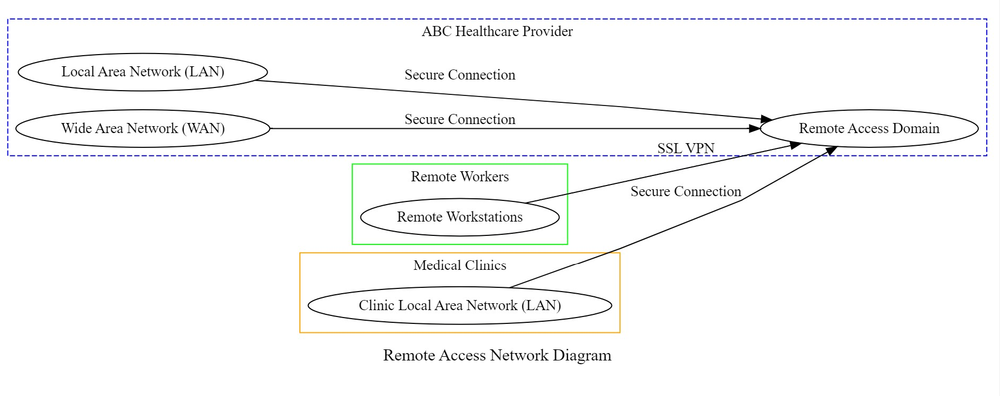
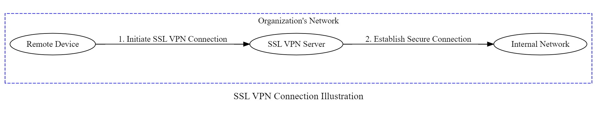
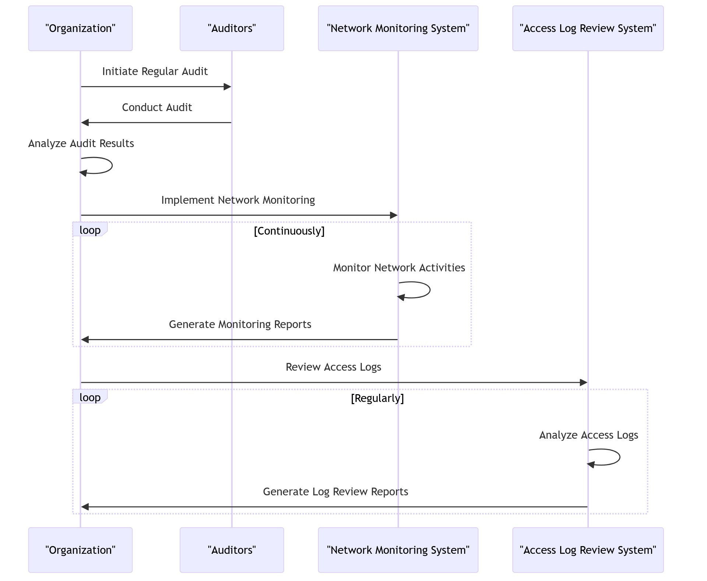

Project: Remote Access Policy for Remote Workers & Medical Clinics at ABC Healthcare Provider
September 2023Overview: This project involved the development of a comprehensive Remote Access Policy to facilitate secure access to ABC Healthcare Provider's network for remote workers and medical clinics. The primary goal was to ensure the confidentiality, integrity, and availability of electronic personal healthcare information (ePHI) while complying with HIPAA regulations.
Roles and Responsibilities:
- Project Lead: Rodrigo C.
- IT Department: John Smith
- Compliance Team: Sarah Thompson
- Network Administrator: David Ramirez
- Security Officer: Mary Johnson
- Legal Department: Emily Roberts
Policy Requirements: The policy outlines key requirements to guarantee secure remote access, including:
- Authorized Access: Granting access based on legitimate need-to-know.
- Secure Remote Connections: Establishing connections through SSL VPN with strong authentication.
- Compliance with HIPAA: Adhering to HIPAA regulations for ePHI protection.
- System Logging and Monitoring: Implementing logging systems for tracking and reviewing remote access activities.
- Security Awareness Training: Providing training to ensure awareness of HIPAA and remote access security best practices.
Challenges and Solutions: During the development, challenges were addressed, such as updates to encryption standards and changes in compliance requirements. Solutions were implemented to ensure the policy remained robust and effective.
Policy Compliance Measures: The organization plans to measure compliance through regular audits, network monitoring, and reviews of access logs. This ensures ongoing adherence to the established policy.
Revision Log:
- 2023-05-23: Initial version of the policy (John Smith - IT Department)
- 2023-06-02: Added definitions and expanded scope (Sarah Thompson - Compliance Team)
- 2023-06-15: Updated requirements for secure connections (David Ramirez - Network Administrator)
- 2023-07-07: Incorporated feedback and clarified training requirements (Mary Johnson - Security Officer)
- 2023-08-12: Revised policy to align with new industry standards (IT Policy Committee)
- 2023-08-27: Finalized policy with minor edits and formatting (Emily Roberts - Legal Department)
Impact: The Remote Access Policy has positively impacted ABC Healthcare Provider by enhancing data protection, ensuring compliance with industry standards, and fostering a culture of security awareness among employees.
Contributors: We extend our appreciation to the dedicated team members who contributed to the successful development and implementation of the Remote Access Policy.
Link to Policy Document (or provide a downloadable PDF): Remote Access Policy Document
Network Diagram
This diagram illustrates the network architecture for the Remote Access Policy project at ABC Healthcare Provider. It showcases the connections and components involved in remote access, including SSL VPN, workstations, LAN, WAN, and the Remote Access Domain.
Network Diagram Code
Network Code
digraph RemoteAccessNetwork {
rankdir=LR;
splines=polyline;
subgraph cluster_organization {
label = "ABC Healthcare Provider";
style = dashed;
color = blue;
// Nodes
LAN [label="Local Area Network (LAN)"];
WAN [label="Wide Area Network (WAN)"];
RemoteAccessDomain [label="Remote Access Domain"];
// Connections
LAN -> RemoteAccessDomain [label="Secure Connection"];
WAN -> RemoteAccessDomain [label="Secure Connection"];
}
subgraph cluster_remote_workers {
label = "Remote Workers";
color = green;
// Nodes
Workstation [label="Remote Workstations"];
// Connections
Workstation -> RemoteAccessDomain [label="SSL VPN"];
}
subgraph cluster_medical_clinics {
label = "Medical Clinics";
color = orange;
// Nodes
RemoteClinicLAN [label="Clinic Local Area Network (LAN)"];
// Connections
RemoteClinicLAN -> RemoteAccessDomain [label="Secure Connection"];
}
// Labels
label="Remote Access Network Diagram";
fontsize=16;
}
SSL VPN Connection Illustration
This illustration provides a visual representation of how SSL VPN works to establish secure connections between remote devices and ABC Healthcare Provider's network. It highlights the secure connection established through SSL VPN for remote workstations.
SSL VPN Connection Illustration Code
SSL VPN Connection Code
digraph SSLVPNConnection {
rankdir=LR;
splines=polyline;
nodesep=0.8;
subgraph cluster_organization {
label = "Organization's Network";
style = dashed;
color = blue;
// Nodes
RemoteDevice [label="Remote Device"];
SSLVPN [label="SSL VPN Server"];
InternalNetwork [label="Internal Network"];
}
// SSL VPN Connection Flow
RemoteDevice -> SSLVPN [label="1. Initiate SSL VPN Connection"];
SSLVPN -> InternalNetwork [label="2. Establish Secure Connection"];
// Labels
label="SSL VPN Connection Illustration";
fontsize=16;
}
Policy Compliance Measures Flowchart
This flowchart outlines the steps involved in measuring policy compliance for the Remote Access Policy. It includes the initiation of regular audits, implementation of network monitoring, and reviews of access logs. The flowchart ensures ongoing adherence to the established policy.
Policy Compliance Measures Flowchart Code
Policy Compliance Measures Flowchart Code
sequenceDiagram
participant A as "Organization"
participant B as "Auditors"
participant C as "Network Monitoring System"
participant D as "Access Log Review System"
A->>B: Initiate Regular Audit
B->>A: Conduct Audit
A->>A: Analyze Audit Results
A->>C: Implement Network Monitoring
loop Continuously
C->>C: Monitor Network Activities
C->>A: Generate Monitoring Reports
end
A->>D: Review Access Logs
loop Regularly
D->>D: Analyze Access Logs
D->>A: Generate Log Review Reports
end